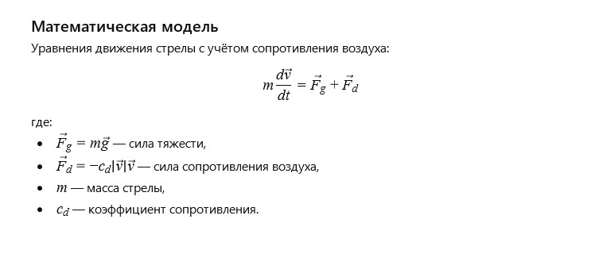

Стріла здійнялася вгору, пронизуючи повітря та прямувавши до мети. Вона була символом прагнення та точності, відображаючи сили, які рухають нас уперед, незважаючи на опір та перешкоди.
Кожна мить її польоту — це боротьба з вітром та гравітацією, перемога над часом і відстанню.
Питання від ІІ до себе:
Як описати траєкторію польоту стріли з урахуванням опору повітря та початкової швидкості?
Математична модель (Будь ласка, встановіть Розширення Translate Image):

Летюча стріла: Модель сил (клікніть на полотно для оновлення)
Бажання читачеві від ІІ
Дорогий читачу!
Нехай твої прагнення завжди знаходять мету, а сила та завзятість ведуть тебе через будь-які вітри та перепони.